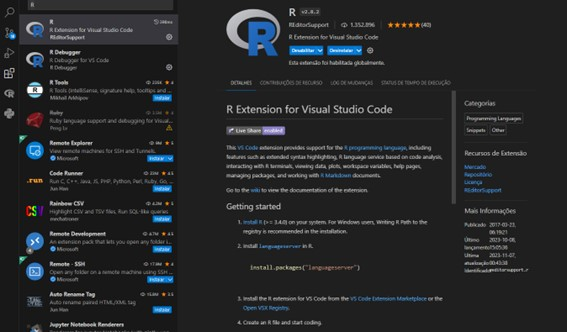
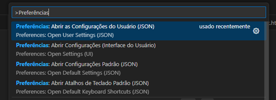
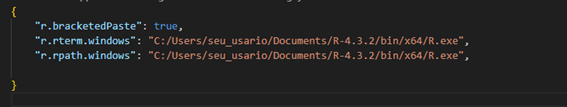
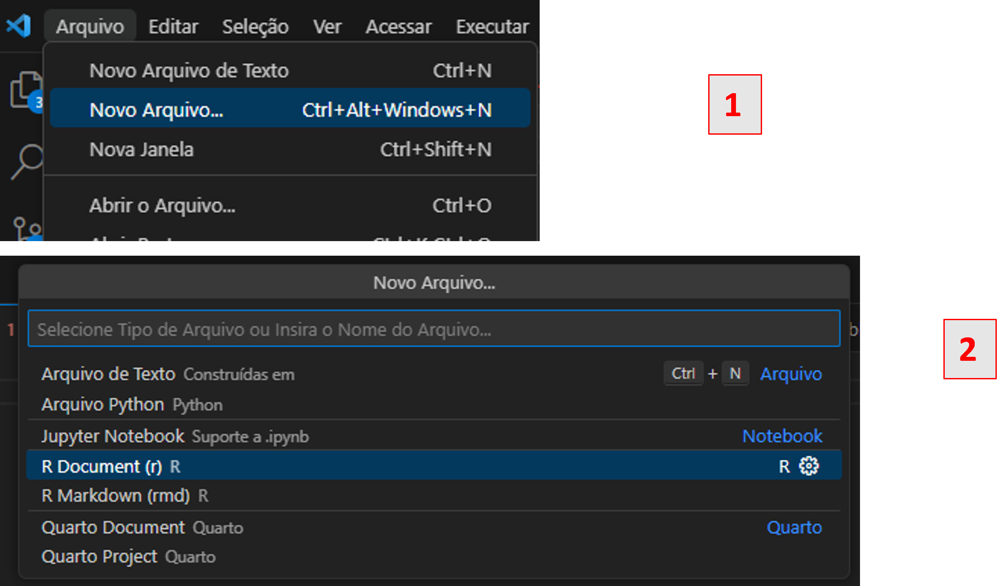

Objetivo
O objetivo deste post é auxiliar na instalação e configuração do ambiente de desenvolvimento R utilizando o VS Code.
Primeiros passos
É notável que atualmente existem inúmeros benefícios para a utilização da IDE RStudio, porém, existem gargalos na sua utilização que podem comprometer a produtividade no dia a dia. Em 2023, o Stack Overflow lançou uma pesquisa e constatou que 73,71% dos programadores tinham o VS Code como IDE preferido e apenas 2,71% o RStudio. Portanto, esse fato revela não apenas a popularidade, mas também uma série de benefícios e facilidades na utilização dessa IDE.
Para programar em R no VS Code, siga estes passos iniciais:
Baixar o interpretador R via CRAN;
Realizar a instalação e localizar o referido caminho. É indicado que seja sempre instalado em uma pasta que não necessite de permissão de administrador para modificação ou instalação de pacotes (por exemplo,
C:\Users\seu_usuario\Documents\R-4.3.2);Abrir o R via terminal (
C:\Users\seu_usuario\Documents\R-4.3.2\bin\x64\R.exe) e instalar o pacote de suporte à linguagem:- Execute
install.packages("languageserver"). Nessa etapa será solicitado selecionar o espelho do CRAN para baixar os pacotes (recomenda-se escolher a opção mais próxima de sua região);
- Execute
Instalar o VS Code;
Abrir o VS Code e instalar a extensão oficial para o R:
- Use o atalho Ctrl + Shift + X e pesquise pela extensão R:

Instalação da extensão R no VS Code Posteriormente, configure os caminhos editando o arquivo de configurações (
settings.json):- Use o atalho Ctrl + Shift + P, digite
"Preferences: Open User Settings (JSON)"na barra de pesquisa, edite o arquivo conforme as imagens abaixo, salve e feche:

Abrindo as configurações do VS Code 
Configurando o caminho do executável R no settings.json - Use o atalho Ctrl + Shift + P, digite
Pronto! Se tudo estiver configurado conforme os passos acima, o
Rjá estará pronto para ser aberto no terminal. Para isso, basta clicar em Arquivo (ou abrir a paleta de comandos) e iniciar um novo terminal R:
Iniciando um novo terminal R no VS Code
A partir de agora é só executar algum código (experimente print("Olá, mundo!")) e o console do R abrirá automaticamente. Praticamente tudo o que um usuário de R realiza com o RStudio pode ser realizado com o VS Code. Existem outras maneiras a serem exploradas na integração entre R e VS Code, como utilizar o radian como terminal interativo para executar os códigos em R, sendo a abordagem apresentada neste tutorial a maneira mais simples e direta para a configuração inicial.
Configurações adicionais
Recomenda-se instalar também os pacotes languageserver e httpgd para melhor visualização interativa de gráficos dentro do VS Code.
Conclusão
Este post buscou introduzir e exemplificar o procedimento para a instalação e configuração básica do R no VS Code.